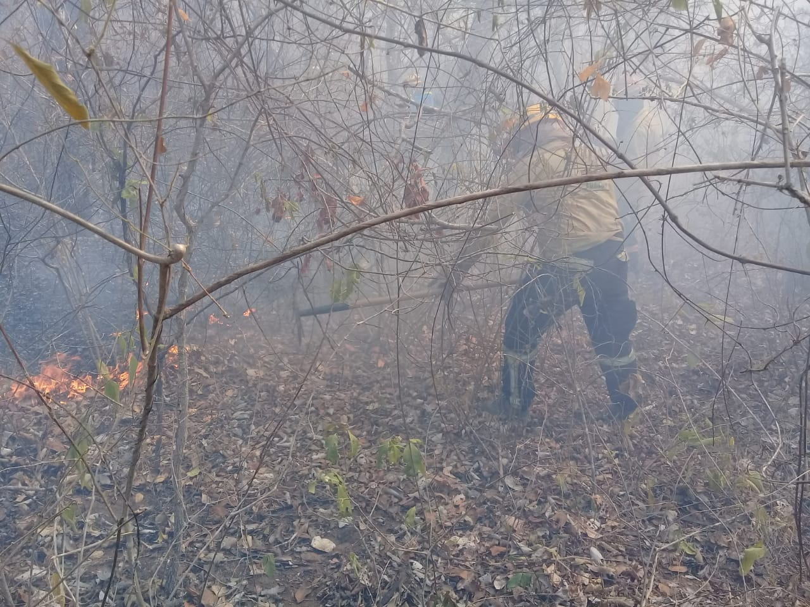
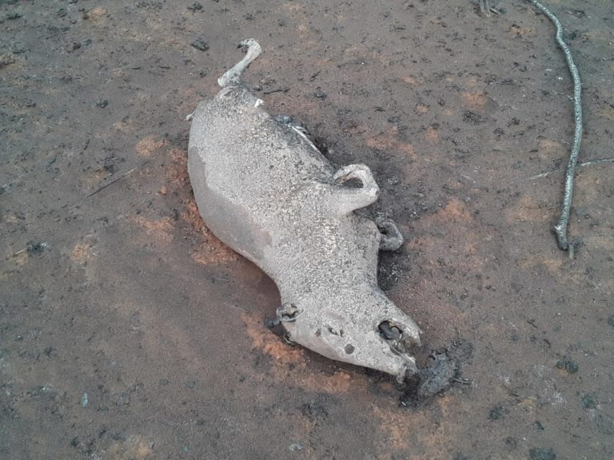

Animales:
La contaminación en aire, agua y suelos, además de la extinción de especies, son algunas de las principales consecuencias que dejan los incendios. Según los expertos, se necesitarán años de trabajo para “recuperar una parte del bosque que se quemó.

El área que ahora está en cenizas era hogar y lugar de origen, por ejemplo, de la Frailea chiquitana, una planta endémica del lugar. Como esta quedaron calcinadas especies grandes, pequeñas y únicas. “Los daños ambientales son elevados a la máxima potencia. De las especies de flora y fauna que son afectadas, algunas son de reproducción lenta y si estas mueren en grandes cantidades pueden tardar muchos años en recuperarse”, explicó la bióloga Kathrin Barboza. Agregó que como se trata de un bosque de características únicas en el mundo, hay especies que pueden extinguirse o pueden catalogarse como amenazadas. El Bosque Seco Chiquitano es un complejo de biodiversidad endémico donde también está la Reserva Natural Tucavaca. Allí existen 554 especies distintas de animales, distribuidas en 69 especies de mamíferos, 221 de aves, 54 de reptiles, 50 especies de anfibios y 160 de peces. En Tucavaca hay, además, 35 especies de fauna y más de 55 plantas endémicas que solamente hay en este lugar en todo el mundo.

De acuerdo con Barboza, todas estas especies, entre plantas y animales, cumplen un rol importante en el equilibrio del bosque. “Por ejemplo, con el tema de la polinización, la dispersión y el control natural de plagas e insectos”. Barboza acotó que una vez que cese el fuego se necesitará una evaluación del daño ambiental.
“Desde cuántas hectáreas de bosque han sido dañadas, hasta ver si hay especies que se pueden rescatar”, dijo y agregó que además se debe hacer un monitoreo para evaluar cuánto tiempo puede tardar en recuperarse el bosque y el fortalecimiento de las plantas.